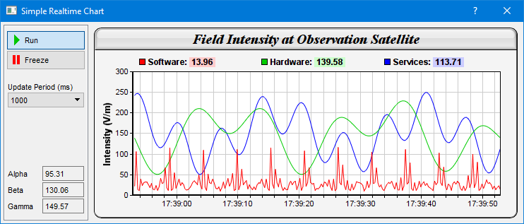

NOTE: For conciseness, some of the following descriptions only mention
QChartViewer (for Qt Widgets applications). Those descriptions apply to
QmlChartViewer (for QML/Qt Quick applications) as well.
This sample program demonstrates a real-time chart with configurable chart update rate.
In this sample program, new values are generated by a random number generator driven by a timer. The values are "shifted" into data arrays, which are used for creating the chart.
The chart is updated by a second timer. This allows the chart update rate to be configurable independently from the data rate. Also, the chart can be "frozen" for easy reading, while the data can continue to update on the background.
To demonstrate the code structure for update rate control (even though for the update rate in this demo it is not necessary to have any rate control), instead of directly updating the chart, the chart update timer calls
QChartViewer.updateViewPort to emit the
QChartViewer.viewPortChanged signal, and the chart is updated in its handler.
[Qt Widgets version] qtdemo/realtimedemo.cpp
#include <QApplication>
#include <QIcon>
#include <QPushButton>
#include <QButtonGroup>
#include "realtimedemo.h"
#include "chartdir.h"
#include <math.h>
#include <stdio.h>
// 250ms per data point, chart contains 1 min of data = 240 data points.
static const int DataInterval = 250;
static const int sampleSize = 240;
RealTimeDemo::RealTimeDemo(QWidget *parent) :
QDialog(parent)
{
//
// Set up the GUI
//
setFixedSize(740, 285);
setWindowTitle("Simple Realtime Chart");
// The frame on the left side
QFrame *frame = new QFrame(this);
frame->setGeometry(4, 4, 120, 277);
frame->setFrameShape(QFrame::StyledPanel);
// Run push button
QPushButton *runPB = new QPushButton(QIcon(":/icons/play.png"), "Run", frame);
runPB->setGeometry(4, 8, 112, 28);
runPB->setStyleSheet("QPushButton { text-align:left; padding:5px}");
runPB->setCheckable(true);
// Freeze push button
QPushButton *freezePB = new QPushButton(QIcon(":/icons/pause.png"), "Freeze", frame);
freezePB->setGeometry(4, 36, 112, 28);
freezePB->setStyleSheet("QPushButton { text-align:left; padding:5px}");
freezePB->setCheckable(true);
// The Run/Freeze buttons form a button group
runFreezeControl = new QButtonGroup(frame);
runFreezeControl->addButton(runPB, 1);
runFreezeControl->addButton(freezePB, 0);
connect(runFreezeControl, SIGNAL(buttonPressed(QAbstractButton*)),
SLOT(onRunFreezeChanged(QAbstractButton*)));
// Update Period drop down list box
(new QLabel("Update Period (ms)", frame))->setGeometry(6, 80, 108, 16);
updatePeriod = new QComboBox(frame);
updatePeriod->setGeometry(6, 96, 108, 21);
updatePeriod->addItems(QStringList() << "250" << "500" << "750" << "1000" << "1250" << "1500"
<< "1750" << "2000");
connect(updatePeriod, SIGNAL(currentIndexChanged(int)), SLOT(onUpdatePeriodChanged(int)));
// Alpha Value display
(new QLabel("Alpha", frame))->setGeometry(6, 200, 48, 21);
m_ValueA = new QLabel(frame);
m_ValueA->setGeometry(55, 200, 59, 21);
m_ValueA->setFrameShape(QFrame::StyledPanel);
// Beta Value display
(new QLabel("Beta", frame))->setGeometry(6, 223, 48, 21);
m_ValueB = new QLabel(frame);
m_ValueB->setGeometry(55, 223, 59, 21);
m_ValueB->setFrameShape(QFrame::StyledPanel);
// Gamma Value display
(new QLabel("Gamma", frame))->setGeometry(6, 246, 48, 21);
m_ValueC = new QLabel(frame);
m_ValueC->setGeometry(55, 246, 59, 21);
m_ValueC->setFrameShape(QFrame::StyledPanel);
// Chart Viewer
m_ChartViewer = new QChartViewer(this);
m_ChartViewer->setGeometry(132, 8, 600, 270);
connect(m_ChartViewer, SIGNAL(viewPortChanged()), SLOT(drawChart()));
// Allocate memory for the data series and initialize to Chart::NoValue
m_timeStamps.resize(sampleSize, Chart::NoValue);
m_dataSeriesA.resize(sampleSize, Chart::NoValue);
m_dataSeriesB.resize(sampleSize, Chart::NoValue);
m_dataSeriesC.resize(sampleSize, Chart::NoValue);
// Set m_nextDataTime to the current time. It is used by the real time random number
// generator so it knows what timestamp should be used for the next data point.
m_nextDataTime = QDateTime::currentDateTime();
// Set up the data acquisition mechanism. In this demo, we just use a timer to get a
// sample every 250ms.
QTimer *dataRateTimer = new QTimer(this);
dataRateTimer->start(DataInterval);
connect(dataRateTimer, SIGNAL(timeout()), SLOT(getData()));
// Set up the chart update timer
m_ChartUpdateTimer = new QTimer(this);
connect(m_ChartUpdateTimer, SIGNAL(timeout()), SLOT(updateChart()));
// Can start now
runPB->click();
}
//
// A utility to shift a new data value into a data array
//
static void shiftData(double *data, int len, double newValue)
{
memmove(data, data + 1, sizeof(*data) * (len - 1));
data[len - 1] = newValue;
}
//
// Shift new data values into the real time data series
//
void RealTimeDemo::getData()
{
// The current time
QDateTime now = QDateTime::currentDateTime();
// This is our formula for the random number generator
do
{
// We need the currentTime in millisecond resolution
qint64 t = m_nextDataTime.toMSecsSinceEpoch();
double currentTime = Chart::chartTime2((int)(t / 1000)) + (t % 1000) * 0.001;
// Get a data sample
double p = currentTime * 4;
double dataA = 20 + cos(p * 129241) * 10 + 1 / (cos(p) * cos(p) + 0.01);
double dataB = 150 + 100 * sin(p / 27.7) * sin(p / 10.1);
double dataC = 150 + 100 * cos(p / 6.7) * cos(p / 11.9);
// Shift the values into the arrays
shiftData(&m_dataSeriesA[0], (int)m_dataSeriesA.size(), dataA);
shiftData(&m_dataSeriesB[0], (int)m_dataSeriesB.size(), dataB);
shiftData(&m_dataSeriesC[0], (int)m_dataSeriesC.size(), dataC);
shiftData(&m_timeStamps[0], (int)m_timeStamps.size(), currentTime);
m_nextDataTime = m_nextDataTime.addMSecs(DataInterval);
}
while (m_nextDataTime < now);
//
// We provide some visual feedback to the latest numbers generated, so you can see the
// data being generated.
//
m_ValueA->setText(QString::number(m_dataSeriesA[sampleSize - 1], 'f', 2));
m_ValueB->setText(QString::number(m_dataSeriesB[sampleSize - 1], 'f', 2));
m_ValueC->setText(QString::number(m_dataSeriesC[sampleSize - 1], 'f', 2));
}
//
// The Run or Freeze button is pressed
//
void RealTimeDemo::onRunFreezeChanged(QAbstractButton *b)
{
if (runFreezeControl->id(b))
m_ChartUpdateTimer->start();
else
m_ChartUpdateTimer->stop();
}
//
// User changes the chart update period
//
void RealTimeDemo::onUpdatePeriodChanged(int i)
{
m_ChartUpdateTimer->start(updatePeriod->currentText().toInt());
}
//
// Update the chart. Instead of drawing the chart directly, we call updateViewPort, which
// will trigger a ViewPortChanged signal. We update the chart in the signal handler
// "drawChart". This can take advantage of the built-in rate control in QChartViewer to
// ensure a smooth user interface, even for extremely high update rate. (See the
// documentation on QChartViewer.setUpdateInterval).
//
void RealTimeDemo::updateChart()
{
m_ChartViewer->updateViewPort(true, false);
}
//
// Draw chart
//
void RealTimeDemo::drawChart()
{
// Create an XYChart object 600 x 270 pixels in size, with light grey (f4f4f4)
// background, black (000000) border, 1 pixel raised effect, and with a rounded frame.
XYChart *c = new XYChart(600, 270, 0xf4f4f4, 0x000000, 1);
QColor bgColor = palette().color(backgroundRole()).rgb();
c->setRoundedFrame((bgColor.red() << 16) + (bgColor.green() << 8) + bgColor.blue());
// Set the plotarea at (55, 62) and of size 520 x 175 pixels. Use white (ffffff)
// background. Enable both horizontal and vertical grids by setting their colors to
// grey (cccccc). Set clipping mode to clip the data lines to the plot area.
c->setPlotArea(55, 62, 520, 175, 0xffffff, -1, -1, 0xcccccc, 0xcccccc);
c->setClipping();
// Add a title to the chart using 15 pts Times New Roman Bold Italic font, with a light
// grey (dddddd) background, black (000000) border, and a glass like raised effect.
c->addTitle("Field Intensity at Observation Satellite", "Times New Roman Bold Italic",
15)->setBackground(0xdddddd, 0x000000, Chart::glassEffect());
// Add a legend box at the top of the plot area with 9pts Arial Bold font. We set the
// legend box to the same width as the plot area and use grid layout (as opposed to
// flow or top/down layout). This distributes the 3 legend icons evenly on top of the
// plot area.
LegendBox *b = c->addLegend2(55, 33, 3, "Arial Bold", 9);
b->setBackground(Chart::Transparent, Chart::Transparent);
b->setWidth(520);
// Configure the y-axis with a 10pts Arial Bold axis title
c->yAxis()->setTitle("Intensity (V/m)", "Arial Bold", 10);
// Configure the x-axis to auto-scale with at least 75 pixels between major tick and
// 15 pixels between minor ticks. This shows more minor grid lines on the chart.
c->xAxis()->setTickDensity(75, 15);
// Set the axes width to 2 pixels
c->xAxis()->setWidth(2);
c->yAxis()->setWidth(2);
// Now we add the data to the chart.
double lastTime = m_timeStamps[sampleSize - 1];
if (lastTime != Chart::NoValue)
{
// Set up the x-axis to show the time range in the data buffer
c->xAxis()->setDateScale(lastTime - DataInterval * sampleSize / 1000, lastTime);
// Set the x-axis label format
c->xAxis()->setLabelFormat("{value|hh:nn:ss}");
// Create a line layer to plot the lines
LineLayer *layer = c->addLineLayer();
// The x-coordinates are the timeStamps.
layer->setXData(DoubleArray(&m_timeStamps[0], sampleSize));
// The 3 data series are used to draw 3 lines. Here we put the latest data values
// as part of the data set name, so you can see them updated in the legend box.
char buffer[1024];
sprintf(buffer, "Software: <*bgColor=FFCCCC*> %.2f ", m_dataSeriesA[sampleSize - 1]);
layer->addDataSet(DoubleArray(&m_dataSeriesA[0], sampleSize), 0xff0000, buffer);
sprintf(buffer, "Hardware: <*bgColor=CCFFCC*> %.2f ", m_dataSeriesB[sampleSize - 1]);
layer->addDataSet(DoubleArray(&m_dataSeriesB[0], sampleSize), 0x00cc00, buffer);
sprintf(buffer, "Services: <*bgColor=CCCCFF*> %.2f ", m_dataSeriesC[sampleSize - 1]);
layer->addDataSet(DoubleArray(&m_dataSeriesC[0], sampleSize), 0x0000ff, buffer);
}
// Set the chart image to the WinChartViewer
m_ChartViewer->setChart(c);
delete c;
}
[QML/Qt Quick version] qmldemo/realtimedemo.qml
import QtQuick
import QtQuick.Window
import QtQuick.Controls
import advsofteng.com 1.0
Window {
title: "Simple Real-Time Chart"
visible: true
modality: Qt.ApplicationModal
width: 730
minimumWidth: 730
maximumWidth: 700
height: 280
minimumHeight: 280
maximumHeight: 280
Pane {
id: leftPane
width: 120
padding: 5
anchors.top: parent.top;
anchors.bottom: parent.bottom;
Column {
ButtonGroup { id: runGroup }
Button {
id: runPB
width: 110
contentItem: Row {
padding:2; leftPadding: 5
Image { source: "icons/play.png"; width:16; height:16; }
Text { text: " Run"; font.pixelSize: 12; }
}
checked: chartUpdateTimer.running
onClicked: chartUpdateTimer.running = true;
}
Button {
id: freezePB
width: 110
contentItem: Row {
padding:2; leftPadding: 5;
Image { source: "icons/pause.png"; width:16; height:16; }
Text { text: " Freeze"; font.pixelSize: 12; }
}
checked: !chartUpdateTimer.running
onClicked: chartUpdateTimer.running = false;
}
// Spacer
Item {width: 1; height: 30}
Text {
text: "Update Period (ms)"
bottomPadding: 3
}
ComboBox {
width: 110
model: ["100ms", "200ms", "300ms", "500ms", "700ms", "1000ms"]
onActivated: chartUpdateTimer.interval = parseInt(currentText)
}
}
Column {
anchors.bottom: parent.bottom;
anchors.bottomMargin: 20
spacing: 4
Row {
Text { text: "Alpha:"; width: 55 }
Rectangle {
width: 55
height: childrenRect.height + 4
border.color: "#888888"
Text { x: 3; id: alphaValue; }
}
}
Row {
Text { text: "Beta:"; width: 55 }
Rectangle {
width: 55
height: childrenRect.height + 4
border.color: "#888888"
Text { x: 3; id: betaValue; }
}
}
Row {
Text { text: "Gamma:"; width: 55 }
Rectangle {
width: 55
height: childrenRect.height + 4
border.color: "#888888"
Text { x: 3; id: gammaValue; }
}
}
}
}
QmlChartViewer
{
id: viewer
anchors.left: leftPane.right
anchors.leftMargin: 5
y: 5
// update chart when on viewport change
onViewPortChanged: demo.drawChart(this);
}
// The backend implementation of this demo.
RealTimeDemo {
id: demo;
}
// This example uses a random number generator that generates a random
// number every 100ms. In real applications, the data can be generated
// by other means.
Timer {
interval:100; running: true; repeat: true
onTriggered: {
demo.getData();
alphaValue.text = demo.ValueA.toFixed(2);
betaValue.text = demo.ValueB.toFixed(2);
gammaValue.text = demo.ValueC.toFixed(2);
}
}
// The chart update timer. The chart can update at a different rate from
// the data, that is, asychronous update.
Timer {
id: chartUpdateTimer
interval:100; running: runPB.checked ; repeat: true
onTriggered: viewer.updateViewPort(true, true);
}
Component.onCompleted: {
chartUpdateTimer.running = true;
}
}
[QML/Qt Quick version] qmldemo/realtimedemo.cpp
#include "realtimedemo.h"
#include <math.h>
// 100ms per data point, chart contains 1 min of data = 600 data points.
static const int DataInterval = 100;
static const int sampleSize = 60 * 1000 / DataInterval;
RealTimeDemo::RealTimeDemo(QObject *parent) : QObject(parent)
{
m_currentChart = 0;
// Allocate memory for the data series and initialize to Chart::NoValue
m_timeStamps.resize(sampleSize, Chart::NoValue);
m_dataSeriesA.resize(sampleSize, Chart::NoValue);
m_dataSeriesB.resize(sampleSize, Chart::NoValue);
m_dataSeriesC.resize(sampleSize, Chart::NoValue);
// Set m_nextDataTime to the current time. It is used by the real time random number
// generator so it knows what timestamp should be used for the next data point.
m_nextDataTime = QDateTime::fromMSecsSinceEpoch(0);
}
RealTimeDemo::~RealTimeDemo()
{
delete m_currentChart;
}
//
// A utility to shift a new data value into a data array
//
static void shiftData(double *data, int len, double newValue)
{
memmove(data, data + 1, sizeof(*data) * (len - 1));
data[len - 1] = newValue;
}
//
// Shift new data values into the real time data series
//
void RealTimeDemo::getData()
{
// The current time
QDateTime now = QDateTime::currentDateTime();
// This is our formula for the random number generator
do
{
// We need the currentTime in millisecond resolution
qint64 t = m_nextDataTime.toMSecsSinceEpoch();
if (t == 0) {
// Initialize to "now" on first use
m_nextDataTime = now;
t = m_nextDataTime.toMSecsSinceEpoch();
}
double currentTime = Chart::chartTime2((int)(t / 1000)) + (t % 1000) / DataInterval
* DataInterval / 1000.0;
// Get a data sample
double p = currentTime * 4;
double dataA = 20 + cos(p * 129241) * 10 + 1 / (cos(p) * cos(p) + 0.01);
double dataB = 150 + 100 * sin(p / 27.7) * sin(p / 10.1);
double dataC = 150 + 100 * cos(p / 6.7) * cos(p / 11.9);
// Shift the values into the arrays
shiftData(&m_dataSeriesA[0], (int)m_dataSeriesA.size(), dataA);
shiftData(&m_dataSeriesB[0], (int)m_dataSeriesB.size(), dataB);
shiftData(&m_dataSeriesC[0], (int)m_dataSeriesC.size(), dataC);
shiftData(&m_timeStamps[0], (int)m_timeStamps.size(), currentTime);
m_nextDataTime = m_nextDataTime.addMSecs(DataInterval);
}
while (m_nextDataTime < now);
//
// We provide some visual feedback to the latest numbers generated, so you can see the
// data being generated.
//
m_ValueA = m_dataSeriesA[sampleSize - 1];
m_ValueB = m_dataSeriesB[sampleSize - 1];
m_ValueC = m_dataSeriesC[sampleSize - 1];
}
//
// Draw chart
//
void RealTimeDemo::drawChart(QmlChartViewer *viewer)
{
// Create an XYChart object 600 x 270 pixels in size, with light grey (f4f4f4)
// background, black (000000) border, 1 pixel raised effect, and with a rounded frame.
XYChart *c = new XYChart(600, 270, 0xf4f4f4, 0x000000, 1);
c->setRoundedFrame(Chart::Transparent);
// Set the plotarea at (55, 62) and of size 520 x 175 pixels. Use white (ffffff)
// background. Enable both horizontal and vertical grids by setting their colors to
// grey (cccccc). Set clipping mode to clip the data lines to the plot area.
c->setPlotArea(55, 62, 520, 175, 0xffffff, -1, -1, 0xcccccc, 0xcccccc);
c->setClipping();
// Add a title to the chart using 15 pts Times New Roman Bold Italic font, with a light
// grey (dddddd) background, black (000000) border, and a glass like raised effect.
c->addTitle("Field Intensity at Observation Satellite", "Times New Roman Bold Italic",
15)->setBackground(0xdddddd, 0x000000, Chart::glassEffect());
// Add a legend box at the top of the plot area with 9pts Arial Bold font. We set the
// legend box to the same width as the plot area and use grid layout (as opposed to
// flow or top/down layout). This distributes the 3 legend icons evenly on top of the
// plot area.
LegendBox *b = c->addLegend2(55, 33, 3, "Arial Bold", 9);
b->setBackground(Chart::Transparent, Chart::Transparent);
b->setWidth(520);
// Configure the y-axis with a 10pts Arial Bold axis title
c->yAxis()->setTitle("Intensity (V/m)", "Arial Bold", 10);
// Configure the x-axis to auto-scale with at least 75 pixels between major tick and
// 15 pixels between minor ticks. This shows more minor grid lines on the chart.
c->xAxis()->setTickDensity(75, 15);
// Set the axes width to 2 pixels
c->xAxis()->setWidth(2);
c->yAxis()->setWidth(2);
// Now we add the data to the chart.
double lastTime = m_timeStamps[sampleSize - 1];
if (lastTime != Chart::NoValue)
{
// Set up the x-axis to show the time range in the data buffer
c->xAxis()->setDateScale(lastTime - DataInterval * sampleSize / 1000, lastTime);
// Set the x-axis label format
c->xAxis()->setLabelFormat("{value|hh:nn:ss}");
// Create a line layer to plot the lines
LineLayer *layer = c->addLineLayer();
// The x-coordinates are the timeStamps.
layer->setXData(DoubleArray(&m_timeStamps[0], sampleSize));
// The 3 data series are used to draw 3 lines. Here we put the latest data values
// as part of the data set name, so you can see them updated in the legend box.
char buffer[1024];
sprintf(buffer, "Software: <*bgColor=FFCCCC*> %.2f ", m_dataSeriesA[sampleSize - 1]);
layer->addDataSet(DoubleArray(&m_dataSeriesA[0], sampleSize), 0xff0000, buffer);
sprintf(buffer, "Hardware: <*bgColor=CCFFCC*> %.2f ", m_dataSeriesB[sampleSize - 1]);
layer->addDataSet(DoubleArray(&m_dataSeriesB[0], sampleSize), 0x00cc00, buffer);
sprintf(buffer, "Services: <*bgColor=CCCCFF*> %.2f ", m_dataSeriesC[sampleSize - 1]);
layer->addDataSet(DoubleArray(&m_dataSeriesC[0], sampleSize), 0x0000ff, buffer);
}
// Set the chart image to the WinChartViewer
delete viewer->getChart();
viewer->setChart(m_currentChart = c);
}
© 2023 Advanced Software Engineering Limited. All rights reserved.